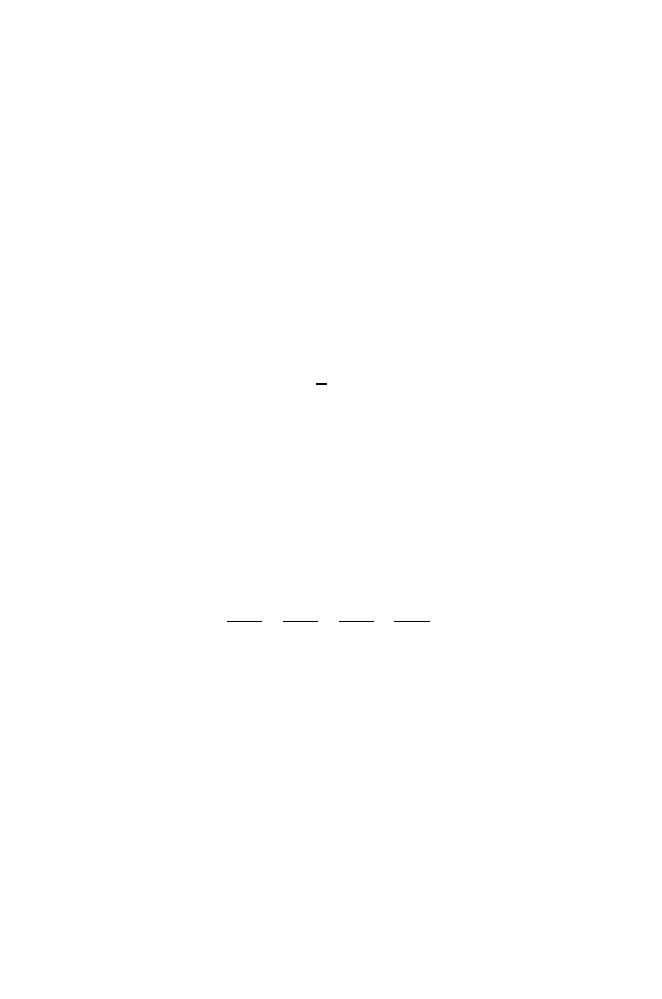

2.7 Biological Words with
k
= 3: Codons
59
with an alternative model: that the codons employed are the most probable
codons for highly expressed genes. For the codon corresponding to a particu-
lar amino acid at position
k
in protein
X
, let
p
k
be the probability that
this
particular codon is used to code for the amino acid in highly expressed genes,
and let
q
k
correspond to the probability for
the most frequently used
codon of
the corresponding amino acid in highly expressed genes. The CAI is defined
as
CAI =
L
k
=1
p
k
/q
k
1
/L
.
In other words, the CAI is the geometric mean of the ratios of the probabilities
for the codons
actually
used to the probabilities of the codons
most frequently
used in highly expressed genes. An alternative way of writing this is
log(CAI) =
1
L
L
k
=1
log(
p
k
/q
k
)
.
This expression is in terms of a sum of the logarithms of probability ratios, a
form that is encountered repeatedly in later contexts.
For an example of how this works, consider the amino acid sequence from
the amino terminal end of the
himA
gene of
E. coli
(which codes for one of the
two subunits of the protein IHF: length
L
= 99). This is shown in Fig. 2.2, and
below it are written the codons that appear in the corresponding gene. Un-
derneath is a table showing probabilities (top half) and corresponding codons
(in corresponding order) in the bottom half. The maximum probabilities (the
q
k
) are underlined. The CAI for this fragment of coding sequence is then given
by
CAI =
1
.
000
1
.
000
×
0
.
199
0
.
469
×
0
.
038
0
.
888
×
0
.
035
0
.
468
· · ·
1
/
99
.
The numerator of each fraction corresponds to
p
k
, the probability that the
observed
codon in the
himA
gene sequence would actually be used in a highly
expressed gene. If every codon in a gene corresponded to the most frequently
used codon in highly expressed genes, then the CAI would be 1.0. In
E. coli
,
a sample of 500 protein-coding genes displayed CAI values in the range from
0.2 to 0.85 (Whittam, 1996).
Why do we care about statistics such as the CAI? As we will see in Chap-
ter 11, there is a correlation between the CAI and mRNA levels. In other
words, the CAI for a gene sequence in genomic DNA provides a first approx-
imation of its expression level: if the CAI is relatively large, then we would
predict that the expression level is also large.
If we wanted a probabilistic model for a genome,
k
= 3, we could employ a
second (or higher)-order Markov chain. In the second-order model, the state
at position
t
+ 1 depends upon the states at both
t
and
t
−
1. In this case, the
transition matrix could be represented by using 16 rows (corresponding to all